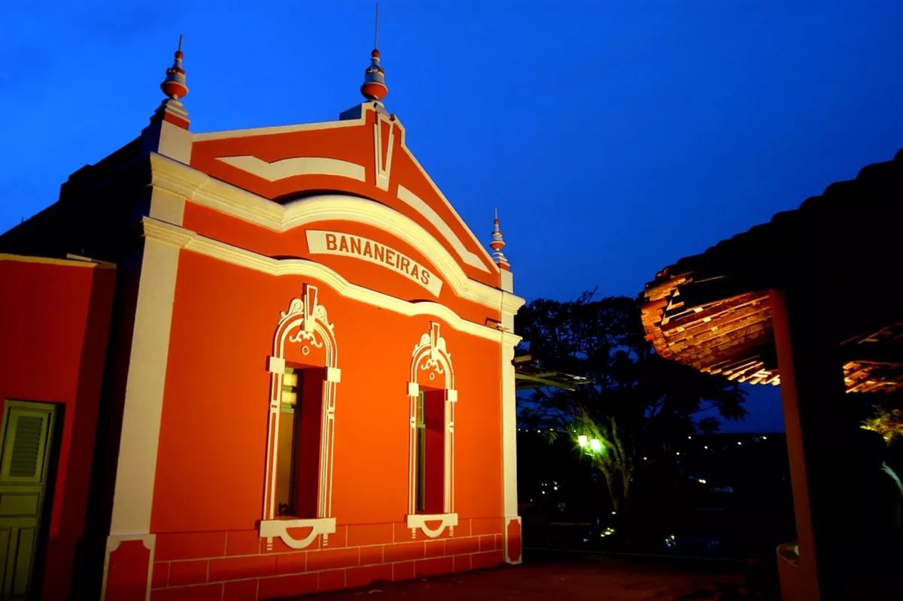
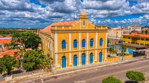
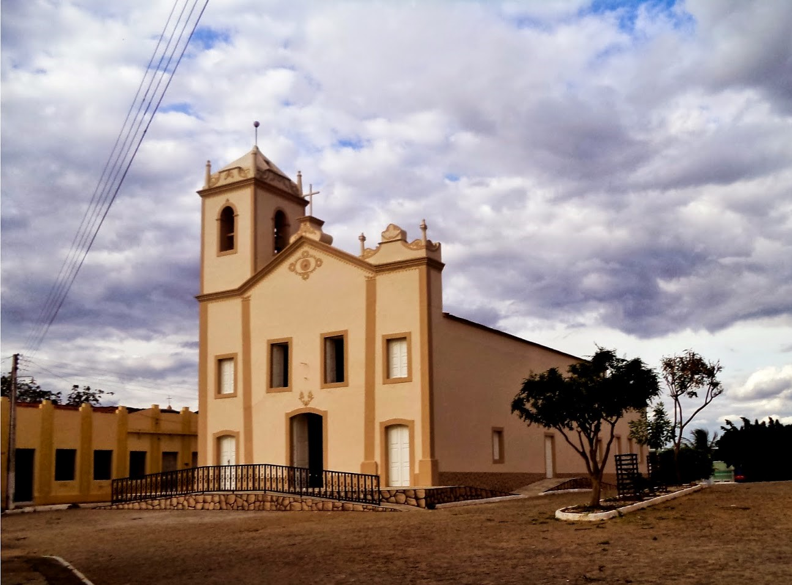
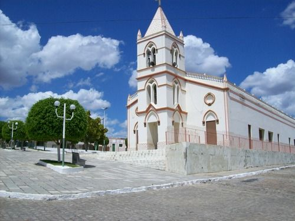
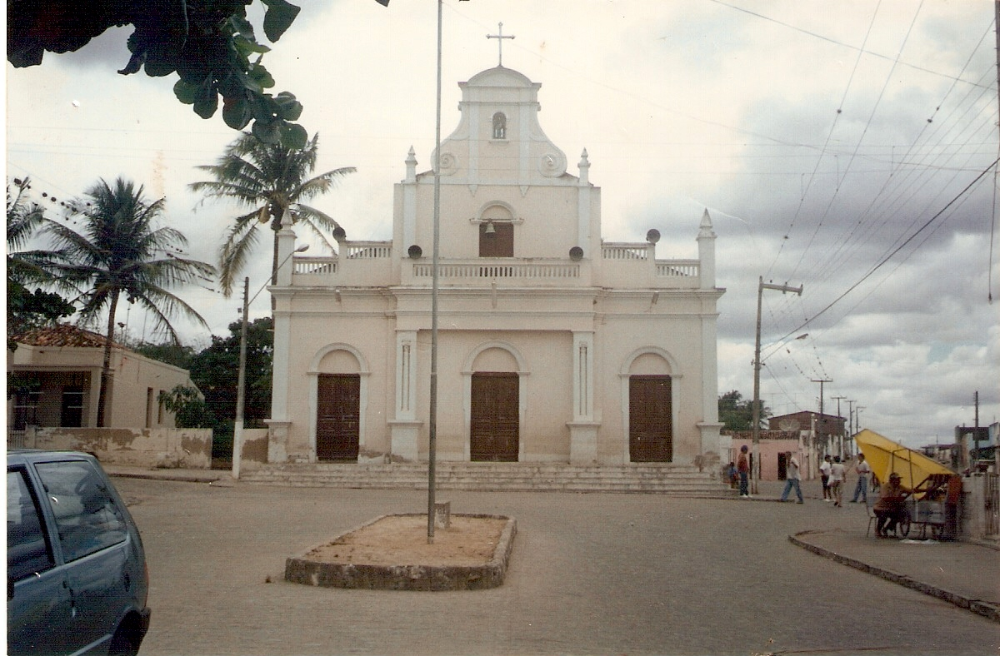
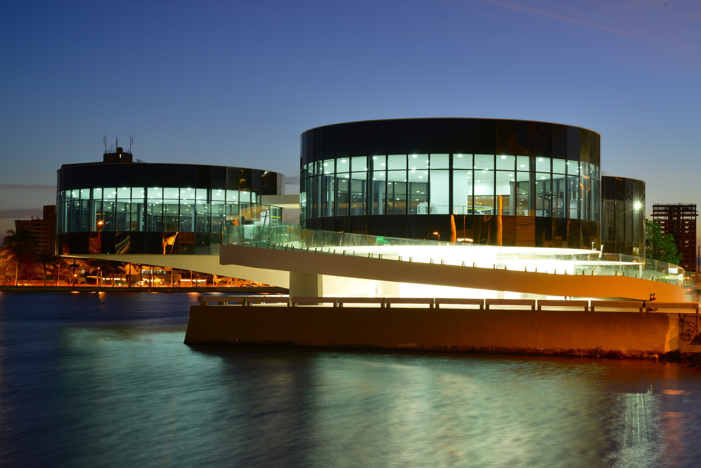

Nossas cidades, disponíveis para você visitar
Areia - Terra da Cultura
Principal município do Brejo Paraibano, Areia surgiu como povoado em 1625. É a cidade natal do pintor Pedro Américo, do escritor José Américo de Almeida. Fica a 120 quilômetros da Capital, João Pessoa. É uma pacata cidade do interior e possui vários prédios tombados pelo patrimônio histórico
Bananeiras - Terra do Frio
Bananeiras, no Brejo Paraibano, a 136 km de João Pessoa, 70 km de Campina Grande e 147 de Natal, é misturar história, lendas, fatos e tradições. A própria história do município dá exemplo disso. As edificações do Período colonial, neoclássico, ecléticos, art-decô e protomodernistas, que ainda existem na cidade, são os resultados da opulência vivida pela aristocracia rural. O dinheiro do café permitia a construção de palacetes, com ladrilhos importados.
Araruna - Terra da Trilha
Conhecida pelo seu clima ameno, o município possui uma das mais tradicionais Festas de São João da Paraíba, festejo popular realizado no final do mês de junho. Araruna é um dos principais municípios do Agreste Paraibano, devido sua polarização aos demais municípios do Curimataú da Paraíba
Cabaceiras - Roliúde Nordestina
Cabaceiras, no Cariri paraibano, já foi cenário para a produção de mais de 30 séries, documentários, novelas e filmes como, por exemplo, “O Auto da Compadecida”, que é baseado na peça teatral de Ariano Suassuna. Além disso, conta com o principal atrativo turístico, o Lajedo de Pai Mateus. Lá os visitantes buscam como roteiro o ecoturismo – o turismo voltado para a natureza e contemplação.
Boqueirão - Terra das Águas
Boqueirão exporta arte em todos os sentidos. São inúmeros os seus filhos que, pela Paraíba e pelo Nordeste como um todo, apresentam toda a riqueza de sua música (como é o caso do saxofonista Sarayva), dança, literatura, dramaturgia, etc. Podemos destacar a Filarmônica Municipal, o grupo Kiriri Band, a orquestra de frevo, as companhias de dança municipais, os grupos de chorinho, seus violonistas e, mais recentemente, seus escritores – poetas e poetisas, contistas e ensaístas.
Queimadas - Terra das Pedras
Queimadas é um dos principais municípios do Agreste Paraibano devido seu comércio ativo e sua localização privilegiada. Queimadas é uma cidade que se encontra na base sul da serra de Bodopitá, distante apenas 18 km de Campina Grande. A região, antes da ocupação comandada pelos sertanistas da família Oliveira Ledo, ligados à Casa da Torre, foi sucessivamente ocupado por sociedades nativas pré-históricas, cujos vestígios ainda podem ser encontrados nos sítios arqueológicos que ainda existem na serra e suas circunjacências.
Campina Grande - Terra das Festas
Considerada um dos principais polos industriais da Região Nordeste, foi fundada em 1 de dezembro de 1697. O município sedia ainda variados eventos culturais, destacando-se os festejos de São João, que acontecem durante todo o mês de junho (chamado de "O Maior São João do Mundo"), Festival Internacional de Música (FIMUS), Festival Internacional de Jazz (FIMUS Jazz) e encontros religiosos.
Principais atrações
Estação bananeira possui estilo colonial e uma excelente gastronimia
Desfrute do lazer e das cachaças de Areia no engenho Triunfo
Vislumbre as beleza naturais da Caating na Pedra da Boca
Visite os set de filmes famosos no Lajedo do pai mateus
Aventure-se pelas trilhas do gavião no lajedo do marinho
Deseja aventura com escalada, a pedra do touro é o ideal
MAPP é um complexo de exposição da cantoria e da literatura de cordel
O acervo é composto de 474 obras de arte. Podem ser encontradas técnicas artisticas
Com diversos pontos naturais propícios à prática do turismo ecológico e esportes de aventura

A Praça foi inaugurada entre 1973 e 1977, época em que houve um desenvolvimento rodoviário nacional
Veja a Paraíba nesses vídeos
Do norte para o sul, veja nosso roteiro turistico

No primeiro dia o Cânion de Macapá formado há milhões de anos por onde corre o Rio Salgadinho. Do alto de um mirante tem-se a vista dos imensos paredões de rocha que escondem entradas de grutas, cavernas e registros de homens pré-históricos.
Após uma aventura, que tal acalmar os ânimos na Igreja de Nossa Senhora do Livramento, em Bananeiras, reúne antiguidade e beleza numa das cidades mais singulares da Paraíba.
Continuando com o caminho cultural o primeiro teatro construído na Paraíba, possui uma acústica de excelente qualidade. Foi edificado com o objetivo de arrecadar fundos para a libertação dos escravos.
Após uma aventura, que tal acalmar os ânimos na Igreja de Nossa Senhora do Livramento, em Bananeiras, reúne antiguidade e beleza numa das cidades mais singulares da Paraíba.